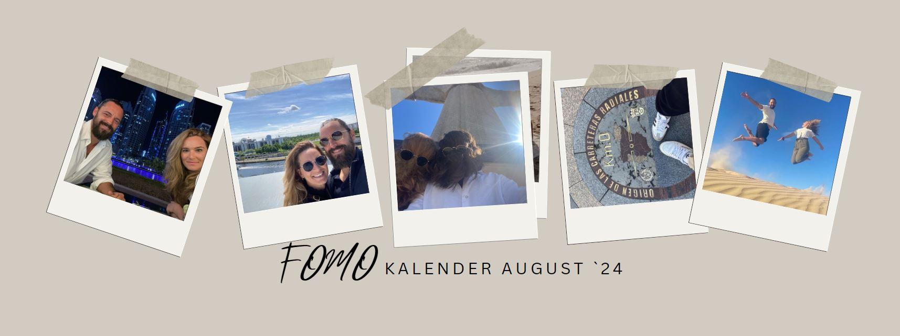

1 de agosto de 2024
ZImmer aufräumen
7. August
Kino
14. August
Sommernacht der Filmmusik
16. August
Zirkus
2 de agosto de 2024
Día de la Virgen de los Ángeles en Costa Rica
2 de agosto de 2024
Feria de Málaga
1. August
Brasswiesn
11. August
Wanderung
23. August
Feuerwerk
3 de agosto de 2024
Fiesta Mayor de Gràcia en Barcelona
31 de agosto de 2024
La Tomatina en Buñol